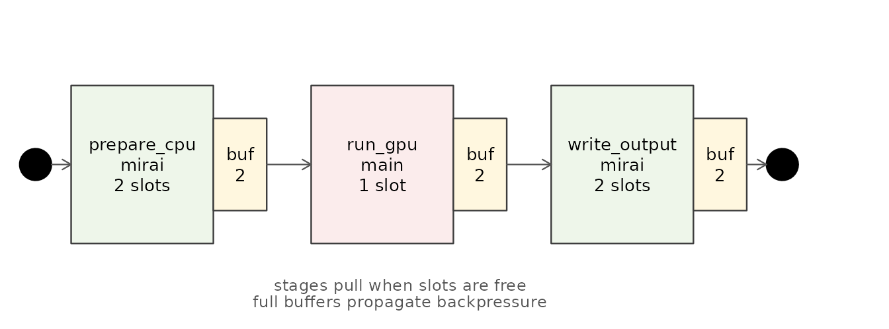

What siphon is
siphon is a runtime for pull-based staged
pipelines in R. It is not a replacement for
future, mirai, parallel, or other
execution backends. Those tools execute individual jobs;
siphon connects stages, limits active jobs with bounded
slots, and lets items move to downstream stages as soon as they are
ready.
The central use case is a pipeline where different stages need different resources:
- CPU-heavy preparation with many workers.
- A GPU dispatcher that must run on the main R thread.
- Parallel I/O with a modest number of workers.
Basic usage: Single-stage pipeline
To run a simple pipeline, start with a source (such as
1:10 or a list) and add a processing stage using
pump(). Finally, execute the pipeline using
pump_run().
# Create and run the pipeline
res <- items |>
pump(function(x) x * 2, backend = "main") |>
pump_run(verbose = FALSE)
print(res)
#. [[1]]
#. [1] 2
#.
#. [[2]]
#. [1] 4
#.
#. [[3]]
#. [1] 6
#.
#. [[4]]
#. [1] 8The ordering contract
Notice that pump_run() returns the results in a list
matching the exact order of the original input items, even
if the execution was asynchronous or completed out of order.
A three-stage pipeline
The canonical multi-stage example maps directly to the scenario from
the introduction. Each stage uses the resource it needs:
prepare_cpu runs CPU-heavy work across several
mirai workers, run_gpu dispatches on the main
R thread with a single slot, and write_output performs
parallel I/O on mirai workers.
Because the pipeline is pull-based, the GPU stage can start on the first prepared item as soon as it is ready, even before all CPU jobs in the upstream stage finish.
The diagram below shows the runtime model: each stage owns a bounded number of active slots, completed items move into a bounded output buffer, and downstream stages pull work as soon as capacity is available.

A staged siphon pipeline with per-stage slots and bounded buffers.
Here we define the helper functions for the stages:
# Define referenced helper functions
prepare_cpu <- function(x) x + 10
run_gpu <- function(x) x * 5
write_output <- function(x) invisible(x)If we are using mirai for parallel backends, we can set
up the pipeline as follows:
# Start mirai daemons for parallel execution
mirai::daemons(2)
# Run the three-stage pipeline
res <- items |>
pump(prepare_cpu, backend = mirai_backend(), max_workers = 2) |>
pump(run_gpu, backend = main_backend(), max_workers = 1) |>
pump(write_output, backend = mirai_backend(), max_workers = 2) |>
pump_run(verbose = FALSE)
print(res)
#. [[1]]
#. [1] 55
#.
#. [[2]]
#. [1] 60
#.
#. [[3]]
#. [1] 65
#.
#. [[4]]
#. [1] 70
# Shut down daemons
mirai::daemons(0)Concurrency control with max_workers
The max_workers parameter specifies the maximum number
of active processing slots (concurrent jobs) allowed for a stage at any
one time.
-
Resource management: You can restrict concurrency
for resource-constrained operations (e.g., by using the synchronous
main_backend()or settingmax_workers = 1on an async backend for a GPU dispatch stage to prevent duplicating contexts or competing for VRAM) while letting other stages run with higher concurrency. -
Backend capacity: By default, if
max_workersis not specified, it defaults to the worker count of the associated backend. For the synchronousmain_backend(),max_workersis ignored and always forced to 1 since execution runs sequentially in the main R process.
Execution backends
siphon supports multiple execution backends to run jobs
in parallel or on different threads. Backends can be specified either
using a constructor function (recommended) or a string alias:
| Backend | Constructor | String Alias | Description |
|---|---|---|---|
| Main thread | main_backend() |
"main" |
Runs jobs synchronously in the current R process. |
| Mirai | mirai_backend() |
"mirai" |
Submits jobs through mirai::mirai(). |
| Future | future_backend() |
"future" |
Submits jobs through future::future(). |
Both styles are valid, and string aliases are automatically resolved internally. For instance, the following two specifications are equivalent:
# Using constructor function
f1 <- items |> pump(function(x) x * 2, backend = main_backend())
# Using string alias
f2 <- items |> pump(function(x) x * 2, backend = "main")Pipeline-wide backend defaults
You can set a pipeline-wide default backend via
pump_run() or pump_drain(). When a stage is
created with pump(..., backend = NULL) (the default), it
inherits the backend set by pump_run(..., backend = ...).
An explicit stage-level backend always overrides the
pipeline-wide default.
This is useful when you want to run an entire pipeline on a specific backend without repeating the backend specification for each stage:
# Set a pipeline-wide default backend
res <- items |>
pump(function(x) x * 2) |> # Inherits "main" from pump_run
pump(function(x) x + 10) |> # Inherits "main" from pump_run
pump_run(backend = "main", verbose = FALSE)
print(res)
#. [[1]]
#. [1] 12
#.
#. [[2]]
#. [1] 14
#.
#. [[3]]
#. [1] 16
#.
#. [[4]]
#. [1] 18You can still override the default for specific stages:
# Override the default for a specific stage
res <- items |>
pump(function(x) x * 2, backend = "main") |> # Explicit override
pump(function(x) x + 10) |> # Inherits "main" from pump_run
pump_run(backend = "main", verbose = FALSE)
print(res)
#. [[1]]
#. [1] 12
#.
#. [[2]]
#. [1] 14
#.
#. [[3]]
#. [1] 16
#.
#. [[4]]
#. [1] 18Worker lifecycle management
When using async backends like mirai or
future, you are responsible for managing the worker
lifecycle. Failing to shut down workers can leave zombie processes or
open connections.
Mirai
For mirai_backend(), start daemons with
mirai::daemons(n) and shut them down with
mirai::daemons(0). Use on.exit() for automatic
cleanup:
if (requireNamespace("mirai", quietly = TRUE)) {
mirai::daemons(2)
on.exit(mirai::daemons(0), add = TRUE)
res <- items |>
pump(function(x) x * 2, backend = mirai_backend()) |>
pump_run(verbose = FALSE)
}Future
For future_backend(), set a plan with
future::plan() and restore the previous plan when done:
if (requireNamespace("future", quietly = TRUE)) {
old_plan <- future::plan("sequential")
on.exit(future::plan(old_plan), add = TRUE)
res <- items |>
pump(function(x) x * 2, backend = future_backend()) |>
pump_run(verbose = FALSE)
}Backpressure and buffer_size
By default, the output buffer for each stage has a capped capacity (up to 1000 items or the input size, whichever is smaller). This prevents excessive memory usage for large or infinite pipelines while still allowing efficient throughput for small ones.
If downstream stages are slow, or if items are large and consume a
lot of memory, you can further limit memory usage and enable
backpressure by setting a smaller
buffer_size.
When the output buffer of a stage is full (i.e. has reached
buffer_size), the stage stops draining its completed jobs.
As active workers remain busy, the stage stops pulling new items from
upstream, propagating the pressure backward through the pipeline.
The example below makes backpressure visible. A fast producer (Stage
1, two workers) feeds a slow consumer (Stage 2, one worker), and Stage
1’s output buffer is capped at buffer_size = 2. We use
pump_drain() (covered in the next section) to stream items
and capture a snapshot mid-run, the moment the third item reaches the
sink:
mirai::daemons(2)
f <- 1:20 |>
pump(function(x) x, backend = mirai_backend(), max_workers = 2, buffer_size = 2) |>
pump(function(x) { Sys.sleep(0.03); x }, backend = mirai_backend(), max_workers = 1)
# Snapshot the live pipeline when the 3rd item is delivered
snapshot <- NULL
delivered <- 0
pump_drain(f, verbose = FALSE, handle_fn = function(id, data, ok) {
delivered <<- delivered + 1
if (delivered == 3) snapshot <<- pump_status(f)
})
print(snapshot)
#. <pump_status>
#. Source (main):
#. length: 20
#. position: 7
#. errors: 0
#. Stage 1 (mirai):
#. workers: 2/2
#. buffer: 1/2
#. done: 5
#. errors: 0
#. Stage 2 (mirai):
#. workers: 1/1
#. buffer: 0/20
#. done: 3
#. errors: 0
#. polls: 3 hits, 12 misses (20% hit)
#. time: 92.6ms (fn: 90.5ms, idle: 2ms)
#.
#. Summary:
#. poll_wall_time: 4.6ms
#. fn: 91ms
#. idle: 2.6ms
mirai::daemons(0)The source holds 20 items and Stage 1 could process them almost
instantly, yet its output buffer is pinned at capacity
(buffer: 2/2) and the source position is far
below 20. A full buffer stops Stage 1 from draining its completed jobs,
which in turn stops it from pulling new items from the source - the
pressure propagates backward. Without the buffer_size = 2
cap, Stage 1 would race ahead and hold all 20 results in memory at
once.
NOTE
This is a live snapshot of a concurrent pipeline, so the exact numbers vary from run to run. The pattern - a full upstream buffer and a source that has not raced ahead - is what demonstrates backpressure.
Streaming with pump_drain()
For long-running or infinite pipelines, pump_drain()
provides a memory-safe alternative to pump_run(). Instead
of accumulating results in a list, it passes each item to a callback
function as soon as it is ready:
results <- list()
f <- 1:5 |> pump(function(x) x * 2, backend = "main")
pump_drain(f, handle_fn = function(id, data, ok) {
results[[id]] <<- data
})
#. | | | 0% | |===================== | 30% | |=================================== | 50% | |================================================= | 70% | |=============================================================== | 90% | |======================================================================| 100%
print(results)
#. [[1]]
#. [1] 2
#.
#. [[2]]
#. [1] 4
#.
#. [[3]]
#. [1] 6
#.
#. [[4]]
#. [1] 8
#.
#. [[5]]
#. [1] 10Progress reporting
For long-running pipelines, pump_run() and
pump_drain() support progress reporting. If
verbose = TRUE (the default) and the pipeline size is large
enough relative to the backend worker count, a text progress bar will be
printed to the console.
Error handling
Error handling is controlled by on_error, which can be
set per stage or as a pipeline-wide default via
pump_run():
-
"collect": propagate error objects so they appear in the final result list. -
"stop": halt the pipeline and throw at the first error (the default). -
"continue": drop failed items.
When a stage is created with pump(..., on_error = NULL)
(the default), it inherits the policy set by
pump_run(..., on_error = ...). An explicit stage-level
on_error always overrides the pipeline-wide default.
Here is a fragile function that throws an error on odd numbers:
Collecting errors
With "collect", the error objects themselves are
preserved and returned in the result list:
res_collect <- items |>
pump(fragile_fn, backend = "main") |>
pump_run(verbose = FALSE, on_error = "collect")
# The list contains both valid results and error objects
print(res_collect)
#. [[1]]
#. <simpleError in (function (x) { if (x%%2 != 0) { stop("odd number error") } x})(1L): odd number error>
#.
#. [[2]]
#. [1] 2
#.
#. [[3]]
#. <simpleError in (function (x) { if (x%%2 != 0) { stop("odd number error") } x})(3L): odd number error>
#.
#. [[4]]
#. [1] 4Continuing on error
With "continue", failed items are dropped entirely; the
result list is shorter than the input but preserves the relative order
of successful items:
Stage-specific overrides
A stage can override the pipeline-wide default. In this example, the
pipeline default is "stop", but Stage 1 explicitly collects
the error so Stage 2 can process it:
items |>
pump(fragile_fn, backend = "main", on_error = "collect") |>
pump(function(x) x + 10, backend = "main", on_error = "stop") |>
pump_run(verbose = FALSE)
#. Error:
#. ! odd number errorNOTE
pump_run(on_error = ...)is a pipeline-wide default. It does not perform any terminal error handling beyond what the stages already do; it only supplies the default policy for stages that do not explicitly set their ownon_error.
Inspecting pipeline status
pump_status() returns a snapshot of a pipeline’s
internal state. Use it to monitor long-running pipelines or to diagnose
where time is spent. The report covers three things: the
source, each stage in the upstream
chain, and a global summary.
Source
-
length- total items in the source. -
position- how many have been pulled so far. -
errors- items seen withok = FALSE.
Each stage
-
workers_active/workers_limit- running jobs vs. the stage’s slot limit. -
buffer_size/buffer_capacity- items in the output buffer vs. its cap. -
completed- items that have finished the stage. -
errors- items seen withok = FALSE. -
fn_time/idle_time- time (ms) running your function vs. waiting.
Summary
-
poll_wall_time- total time (ms) spent coordinating insidenext_item(). -
fn/idle- aggregate work and wait time across all stages.
Reading a status report
Call pump_status() after a run to see how the pipeline
behaved:
mirai::daemons(2)
f <- 1:5 |>
pump(
function(x) {
Sys.sleep(0.01)
x + 10
},
backend = "mirai",
max_workers = 2
) |>
pump(
function(x) x * 2,
backend = "mirai",
max_workers = 2
)
pump_run(f, verbose = FALSE)
#. [[1]]
#. [1] 22
#.
#. [[2]]
#. [1] 24
#.
#. [[3]]
#. [1] 26
#.
#. [[4]]
#. [1] 28
#.
#. [[5]]
#. [1] 30
# Source position, per-stage completed/errors, and a fn-vs-idle timing summary
print(pump_status(f))
#. <pump_status>
#. Source (main):
#. length: 5
#. position: 5
#. errors: 0
#. Stage 1 (mirai):
#. workers: 0/2
#. buffer: 0/5
#. done: 5
#. errors: 0
#. Stage 2 (mirai):
#. workers: 0/2
#. buffer: 0/5
#. done: 5
#. errors: 0
#. polls: 5 hits, 4 misses (55.6% hit)
#. time: 6.6ms (fn: 0.1ms, idle: 6.5ms)
#.
#. Summary:
#. poll_wall_time: 8.7ms
#. fn: 51.1ms
#. idle: 7.3ms
mirai::daemons(0)At a glance, the report confirms every item was pulled
(position), each stage completed its work with
no errors, and how runtime split between useful work
(fn) and waiting (idle). When per-item work is
substantial, fn dominates; when work is trivial,
idle (coordination) dominates - which is exactly why siphon
targets pipelines with real work per item (see note below).
Because pump_status() reads live state, you can also
call it during execution - for example from a
pump_drain() callback - to monitor progress without
stopping the pipeline.
NOTE
Timing metrics exclude backoff sleep (the
sleep_msargument ofpump_run()andpump_drain()); total wall-clock time is roughlypoll_wall_time + poll_misses * sleep_ms. With parallel backends,fn_timeaggregates work across all workers and can exceedpoll_wall_time, since workers run simultaneously while the main thread only coordinates. siphon is designed for pipelines with substantial work per item, where coordination overhead is negligible compared to actual work time.
Timeout limitations
The timeout parameter in pump_run() is
checked cooperatively between polling iterations on the main R thread.
This means:
-
Only works with async/parallel backends: The
timeout will only trigger if control is returned to the main loop
(e.g. using
mirai_backend()orfuture_backend()with a parallel plan). -
Does not work for synchronous backends: If using
main_backend()(or a sequential future plan), a job stuck in an infinite loop or blocking operation runs on the main thread, freezing the execution and preventing the timeout from ever being checked. - Does not work for C/C++ blocks: If a task blocks synchronously in compiled C/C++ code within a worker, the timeout cannot interrupt it immediately.
The timeout is suitable for detecting stuck jobs when running asynchronously, but it does not provide hard real-time guarantees or support synchronous execution pipelines.
Custom sources with pump_source()
For advanced use cases, you can create custom sources that connect to
external data systems (files, databases, message queues) using
pump_source(). A custom source only requires a
pull_fn function that returns
list(id, data, ok) or NULL (where
id must be a non-missing, scalar atomic value, and
uniqueness of this identifier is the user’s responsibility).
For a complete example of implementing a database-backed queue source
using liteq for long-running daemon processes, see the Asynchronous Daemons vignette
(vignette("daemons", package = "siphon")).
Quick reference
Use this table to pick options for a stage or a run:
| Decision | Option | Guidance |
|---|---|---|
| Where to run a stage | backend |
main_backend() for sequential or main-thread-only work
(e.g. GPU dispatch); mirai_backend() or
future_backend() for parallel work. |
| How much concurrency | max_workers |
Cap concurrent jobs per stage. Use 1 for
resource-constrained stages; higher for CPU/I/O parallelism. Ignored
(forced to 1) for main_backend(). |
| How much to buffer | buffer_size |
Lower it to bound memory and enable backpressure when downstream is slow or items are large. Leave the default for small, fast pipelines. |
| Collect vs. stream |
pump_run() vs pump_drain()
|
pump_run() returns all results in input order.
pump_drain() passes each item to a callback as it is ready
- use it for infinite or long-running pipelines. |
| On failure | on_error |
"stop" (default) halts on the first error;
"collect" returns error objects; "continue"
drops failed items. Set per stage or pipeline-wide. |
| Monitor / debug | pump_status() |
Inspect source position, per-stage workers and buffers, errors, and
fn vs idle timing - at any point, including
during a run. |